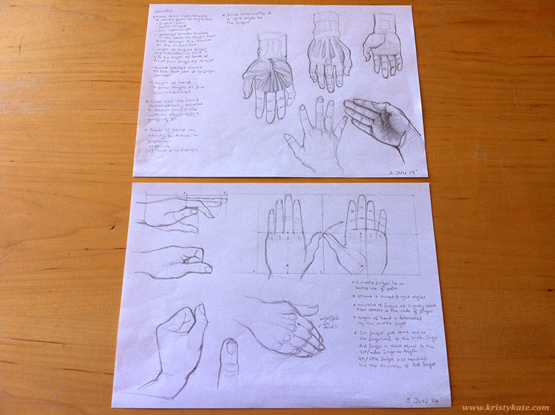
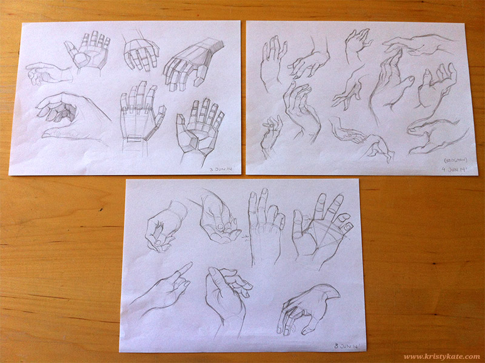

Week 11 Studies
June 2nd - 8th
Week 11 = hand studies! I studied the construction and proportions of the hand from Loomis' Drawing the Head & Hands and also made sketches based on the plates from Bridgman's The Book of a Hundred Hands and by using my own hand for reference.


There's still so much to learn in regards to drawing hands and I will need to revisit them more thoroughly in the future. My gut however, is telling me to concentrate on the limbs over the next two weeks (before it's time for the 3rd turnaround sheet) to better understand their relation to the torso and how they connect with the hands and feet.
Within the next few months I'd like to jump into more rendered (digital) studies and begin experimenting with character sketches. While learning anatomy is a priority, I'm wary of falling into the perfectionist trap of holding myself back from other areas until the anatomy is perfect. In reality, anatomy takes years of dedicated study to master, and even then, artists use reference. Building an understanding of anatomy through studies alone is fantastic, but I wonder if making a start on character designs and illustrations now will be a better platform for improvement?
It's worth a try!
Until next time,
x Kristy Kate
+ + +
Have any thoughts on my studies? Join me on my creative journey by leaving a comment (constructive criticism welcome) or connecting via Twitter or Facebook.